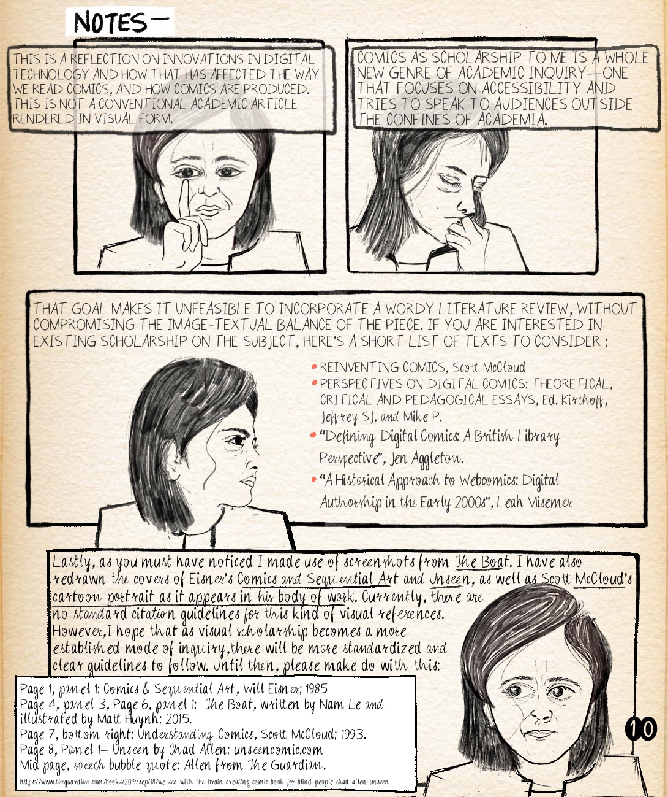
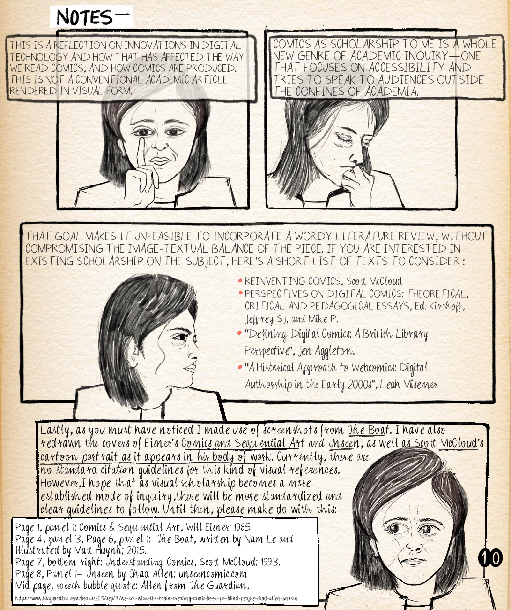

Kay Sohini | Stony Brook University
Posted 1 May 2020

 
Kay Sohini is a PhD candidate and an illustrator based in New York. She is currently working on her dissertation, which is written/drawn entirely in the comic medium. Her work seeks to examine how autocomics/ethnographical graphic narratives can be utilized by scholars and artists alike to amplify marginalized voices. Her work on queer comics has recently been published in Assay: A Journal of Non-fiction Studies, and is about to be published in the Handbook of Comics and Graphic Narratives by de Gruyter in late 2020. Her article “Being and Belonging in Transnational Comics” for Comics and Catharsis is scheduled to appear later in 2020-21. She also serves as the Secretary/Executive Committee member of the International Comic Arts Forum, and writes about comics and academic precarity in GradHacker. You can find more about her non-academic endeavors—including a recently launched webzine Comics from the Margins that features diverse comic artists from around the world at kaysohini.hcommons.org.
Recommended citation:
Sohini, Kay. “Comics in the Age of Digitization.” Sequentials, vol. 1, no. 4, 2020.